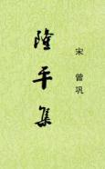

|
隆平集，20卷，旧题曾巩撰，前有绍兴十二年宋宗室赵伯卫序。《郡斋读书志》《四库提要》认为是托名。现代学者余嘉锡《四库提要辩证》则引证大量材料，证明此书并非托名。曾巩曾于宋神宗元丰四年入史馆修太祖至英宗五朝国史，现多认为此书大概是他在史馆期间撰修的一部国史草稿。 此书记载北宋太祖、太宗、真宗、仁宗、英宗五朝历史，起自建隆年间，止于治平年间，故名，又称《五朝隆平集》。前3卷体例类似会要，分26门，每门分若干条，但却并非每门都是贯串5朝的系统记载，颇似随笔札记，大概是作者从会要、实录、日历等书中录出以备修5朝国史纪志而用的材料。从第4卷以下则为284列传，各以其官为类。此书是目前存世记载北宋的最早的一部史书，因此具有较大的参考价值。 （2021/11/16，独孤氏整理） |
 |